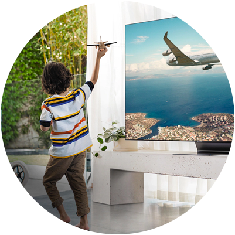
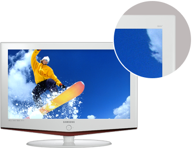
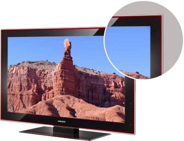
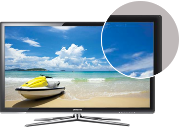
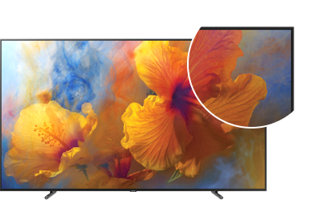
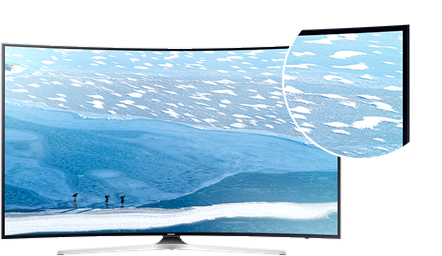
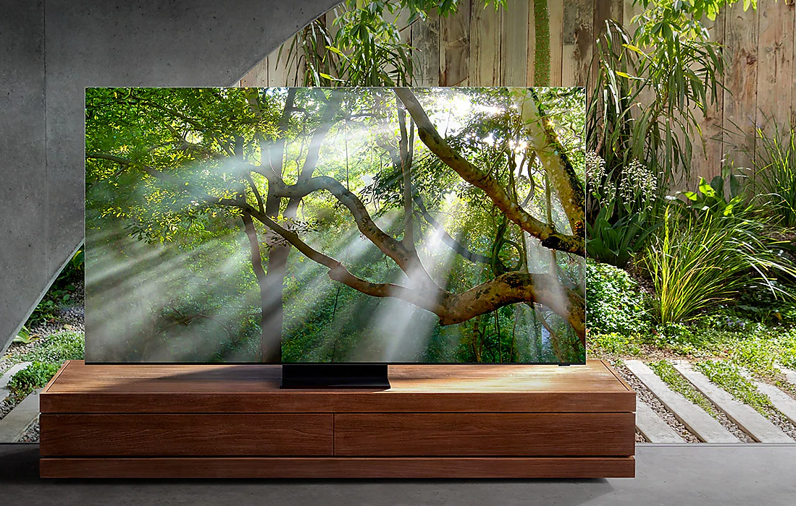

¡Trazando la historia del diseño del Bisel en los televisores Samsung!


¡Acompáñanos en un recorrido a través de la innovación en diseño y estilo!
año2006
El televisor LCD de Burdeos
El lujoso bisel de alto brillo de este televisor tenía 54 mm de ancho.
año2008
El televisor LCD Crystal Rose
El bisel se redujo a 45 mm gracias a la innovadora tecnología de doble inyección que proporcionaba una sensación tridimensional a la pantalla, como la de un cristal.

año2010
TV LED 3D Inteligente
El material del bisel se reemplazó con metal y su grosor se redujo a 28 mm.

año2014
TV UHD Curvo
El diseño curvo del televisor y el bisel de 10.5 mm de ancho proporcionaron una experiencia visual envolvente.
año2017
TV QLED
Se adoptó un diseño sin bisel en los cuatro lados de la pantalla, con un ancho de bisel real reducido a solo 12.5 mm.
año2014
TV UHD Curvo
El diseño curvo del televisor y el bisel de 10.5 mm de ancho proporcionaron una experiencia visual envolvente.
